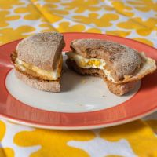

Classic Egg Sandwich Recipe

KITCHEN GEAR
- Small bowl
- Measuring spoons
- Small nonstick skillet
- Spatula
- 2 Plates
INGREDIENTS
- 2 large eggs
- 2 tsp vegetable or olive oil
- Place the cooked egg on the toasted English muffin to create a sandwich.
- 2 whole-wheat English muffins, splitand toasted
INSTRUCTIONS
- Crack one egg on the rim of the bowl and then empty it into the bowl. Throw away or compost the shell.
- Put the skillet on the stove and turn the heat to medium. Let it heat up for about 2 minutes, then add the oil.
- Slowly slide the egg from the bowl to one side of the skillet.
- Crack the second egg into the bowl, then slide it onto the other side of the skillet.
- When the eggs start to set and the edges are solid, use the spatula to flip the first egg, then the second egg.
- Continue to cook the eggs until the yolks are firm.
- Put an English muffin half on each plate. Slide an egg onto each muffin, then top with the other muffin halves. Serve right away.